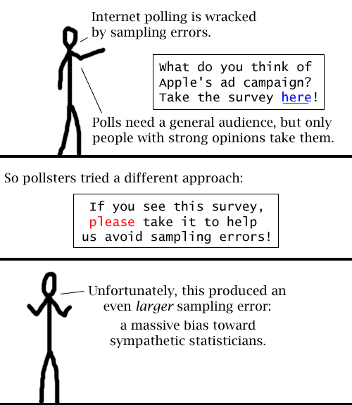

Comic JK 64
When I Feel Like It
⇤
<
?
>
⇥

⇤
<
?
>
⇥
Forum
.
RSS
.
Digg
.
Facebook
.
Reddit
.
Twitter
.
Stumbleupon
vvv ME AND ALL THESE PEOPLE LIKE DINKS vvv >I believe you mean "All of these people and I like dinks." i mean christ it's not funny OR smart >Your comment? Yes! >>Sounds like a sampling bias to me >>>Seconded. There's just one guy who'se gone through the entire comic, writing "this sux" on all the forums. To which I reply: why are you reading so many pages then? If I had to guess, it would be to stave off the people who are like "You can't say it sucks, you've barely even read it!" The end result, of course, is that you can never express ANY negative opinion AT ALL, because either you avoided the shitty comic and thus are ill-informed, or you should've been doing something else and thus are a douchebag. Let's turn every opinion into praise! Or perhaps it is because despite the fact that it may not be that funny, the insulter finds himself to be nagged by the fact that he has not done anything better. Or maybe he's just bad at math, and so doesn't get the joke. lol Or perhaps the person who's been going through each of them is the author himself. *reaches for tinfoil hat* Our Internet-based survey shows that 99% of dorky college boys have seen your anus naked.